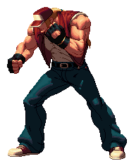

¿Que es un sprite?
Los Sprites, son un tipo de mapa de bits dibujados en la pantalla del ordenador por hardware grafico especializado, sin cálculos adicionales de la CPU. estos suelen ser pequeños y parcialmente transparentes,permitiendoles adoptar formas mas alla del rectangulo; Típicamente, los sprites son usados en videojuegos para crear los gráficos de Por ejemplo, los personajes de Mario podrían ser sprites. Generalmente son utilizados para producir una animación, como un personaje corriendo, alguna expresión facial o un movimiento corporal.Los sprites han ido evolucionando a lo largo de la historia de los videojuegos. En un principio, mientras algunos eran generados a computador, otros eran dibujados a mano para ser posteriormente traspasados al computador
Sprite de mario.
Proceso de animacion de un Sprite.
KeyFrames.
Un KeyFrame (o fotograma clave) en la animación y la realización de sprites es un dibujo o toma que define los puntos de inicio y finalización de cualquier transición suave. Estos se denominan fotogramas porque su posición en el tiempo se mide en fotogramas en una tira de película o en una línea de tiempo de edición de video digital. Una secuencia de fotogramas clave define qué movimiento verá el espectador, mientras que la posición de los fotogramas clave en el Sprite, el video o la animación define la sincronización del movimiento. Debido a que solo dos o tres fotogramas clave en el lapso de un segundo no crean la ilusión de movimiento, los fotogramas restantes se llenan con "entremedios".
Fotogramas para la creacion de una animacion.
La sensacion de impacto y velocidad.
La anticipacion.
La anticipacion, son aquellos frames, los cuales sirven para marcar el inicio de una animacion, evitando que las animaciones sean demasiado rapidas.
Burning Knuckle de Terry Bogard
como se puede apreciar, antes de la animacion principal Terry extiende sus brazos, estos frames en los que este los extiende sirven como los frames de anticipacion, lo cual indica al jugador que se realizara un ataque, permitiendole reaccionar a tiempo.
El smear.
A diferencia del movimiento tradicional en la animación, que utiliza fotogramas clave (para trazar puntos de inicio / finalización) y fotogramas intermedios (para crear la ilusión de movimiento), un "smear" representa un "desenfoque" rápido de movimiento en un solo fotograma.
En lugar de dibujar un sujeto perfecto que se mueve a través de una acción en docenas de poses fotograma a fotograma, las manchas de animación logran la ilusión de movimiento en un solo fotograma, o una pequeña serie de fotogramas, colocados entre fotogramas clave típicos. Este "desenfoque" crea la sensación de un repentino estallido de velocidad que le da a la animación una sensación de ritmo y acción frenéticos que la cuidadosa animación de fotogramas clave no coincide del todo. La mejor parte es que nuestros ojos ni siquiera nota la diferencia.
he aqui unos ejemplos de la utilizacion del smear en algunos sprites:
Felicia en DarkStalkers.
Capitan America en Marvel vs Capcom.
necro en Street Fighter III: Second Impact.
Makoto en Street Fightet III: Third Strike.
Overshooting.
El overshooting es cuando se agregan frames al final de una animacion, esto le dara una sensacion de impacto al movimiento que hayamos animado, esto se puede apreciar en una animacion de correr, ya que al momento de parar, este no para inmediatamente si no que hay unos frames extras al final de la animacion, los cuales dan la sensacion de que se estaba corriendo con una gran fuerza y velocidad.
golpe aereo de Makoto.
Animacion completa.
como se puede apreciar al final de la animacion del golpe que realiza Makoto, las mangas de su gi de karate, se mueven debido a la velocidad y fuerza del golpe, sumado a esto, antes de estos frames se logra apreciar la utilizacion del smear asi como la deformacion de su brazos lo cual le agrega mas impacto al movimiento.
Romper el cuerpo.
La accion de romper el cuerpo, no es nada mas que alejarse de la anatomia y movimientos reales, para asi agragar, impacto y velocidad a los movimientos, esto se hace para hacer que cada accion realizada se sienta mas satisfactoria al realizarla, asi como agregarle valor a la animacion.

Sol Badguy en Guilty Gear.
como se puede apreciar, tanto su cabeza, su torzo asi como alguna de las extremidades de Sol BadGuy estan en posiciones los cuales son anatomicamente imposibles, el hacer esto agrega a la animacion la sensacion de que este ha recibido un golpe tan fuerte que ha hecho que su cuerpo se contorsione de manera extraña
Utilizacion del 3D en la creacion de spites mas detallados.
La gente suele pensar que un juego 3D es más avanzado técnicamente que un juego 2D. De hecho, se podría argumentar que es todo lo contrario. Los juegos 3D son, en efecto,son más similares a los títeres. Un modelo solo necesita la aplicación de las matemáticas para dictar el movimiento. Los juegos 2D requieren mucho más arte para trabajar. Si desea realizar un cambio de movimiento, no puede simplemente asignar el punto X para moverse al punto Y en el tiempo Z. Tienes que dibujar los marcos individualmente.
Cuando se desarrolla un juego 2D, tomar dibujos conceptuales y convertirlos en sprites es un proceso minucioso. Un equipo formado por varios artistas trabaja en un personaje, lo que inevitablemente conduce a diferencias estilísticas. Luego, estos deben combinarse en un diseño de personaje consistente para animar correctamente.
sin embargo se ha desarrollado una tecnica mediante la cual, se puede animar un sprite sin que haya diferencias entre cada fotograma debido a que diferentes personas trabajan en el mismo sprite, esta tecnica consiste en la utilizacion de un modelo 3D el cual sirve como base para crear los frames en 2D.
pasos a seguir:
Creacion de un concepto 2D:
Creacion de un concepto 2D para cada personaje, los conceptos de personajes 2D, se basan en los diseños preliminares del director de arte, formando la base de todo lo demas. Estos conceptos, dibujados pueden adecuarse al formato pixel-art, tardando en completarse alrededor de tres dias por personaje.
concepto 2D.
Creacion de un modelo 3D:
A continuacion, se utilizan herramientas 3D para tomar los conceptos de personajes de pixeles 2D y convertirlos en modelos 3D. Esto lleva alrededor de dos semanas de desarrollo por personaje. Posterormente, una seccion del equipo de desarrollo crea las animaciones ajustandolas al estilo visual y a la sensacion general del juego.
modelo 3D.
Dibujar los elementos visuales 2D basados en la la animacion 3D:
tomando como base las animacion ya hechas,se seleccionan aquellas las cuales e adaptan mejor a los elementos 2D. Estas animaciones se renderizan en cuadros estaticos 2D, creando una base aproximada para los graficos de pixeles 2D.
dibujo 2D tomando como base el modelo 3D.
Creacion de conceptos finales en 2D:
se utilizan las imagenes creadas en los pasos anteriores, para dibujar(en forma de pixel) el arte conceptual de los movimientos de cada personaje.
ultimos detalles 2D.
Crear un personaje Alfa:
Se utilizan los datos de animacion de personajes creados en los pasos anteriores para dibujar en 2D, los conceptos finales,como ajustar la postura del personaje, delinea los musculos y agrega pequeños toques como arrugas en la ropa y expreciones faciales.
detalles agregados al personaje.
Detalles del personaje y finalizacion:
Se agregan reflejos al personaje, expresando completamente la forma y textura de los musculos, la ropa y otros detalles. Este es el punto en el que se mezaclan colores diferentes, para agregar sombras al personaje, este proceso puede durar seis meses por personaje.

Sprite terminado.
aqui algunos ejemplos de otros sprites que utilizan esta tecnica:
Ash Crimson en KOF XIII.
Hazama en BlazeBlue.
Si bien, los resultados son facinantes ya que se obtienen sprites muy bien animados, con detalles espectaculares. Actualmente muy pocas compañias son capazes de utilizarla, ya que este es un proceso largo y costoso y en una industria en la que se busca maximizar ganancias, como lo es la industria del videojuego, este proceso no es nada rentable, ya que si no se tienen buenas ventas, puede significar perdidas millonarias para la empresa, llevandola incluso a la bancarrota, debido a todo esto la gran mayoria de videojuegos obtan por el 3D, ya que el mercado ha cambiado; No importa que tan bello se el videojuego en 2D, si no se cuenta con ventas garantizadas, este sera un rotundo fracaso.